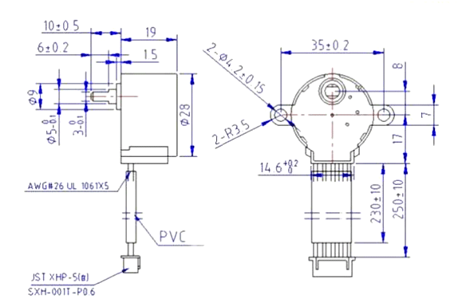
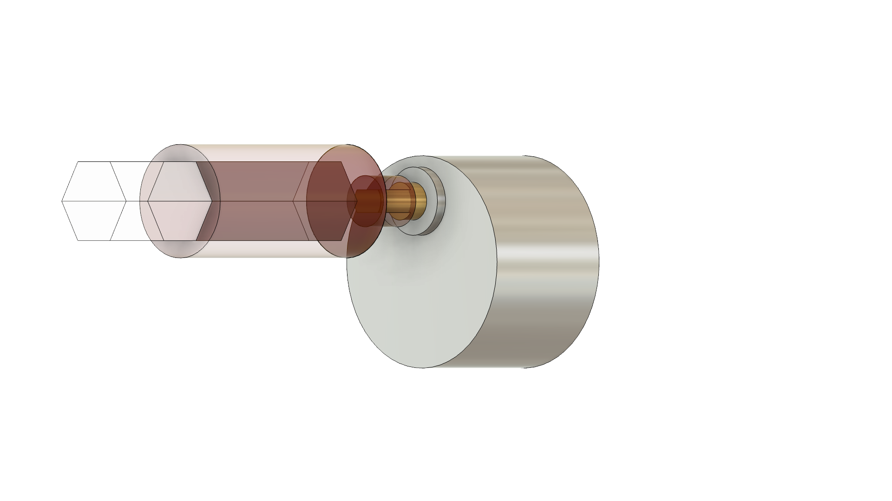

← Back to PortfolioAutoblind Turner on ArduinoProject TypePersonalDateJune 2025Skills UtilizedCAD (Fusion 360), Arduino IDE, Interpreting dimensioned engineering drawingsI wanted to learn more about Arduino, and CAD while making my life easier!Original project page ↗Your browser does not support this video.Open video directly ↗28BYJ-48-dimensionsArduino AutoBlind Stepper Motor Render v1← Previous projectNext project →